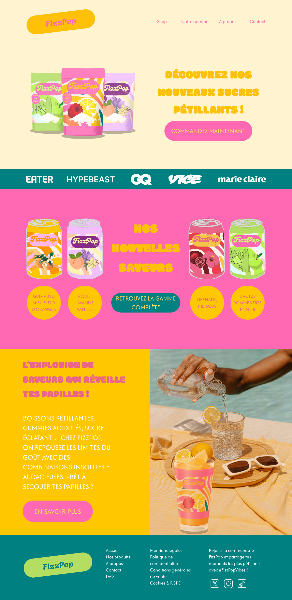
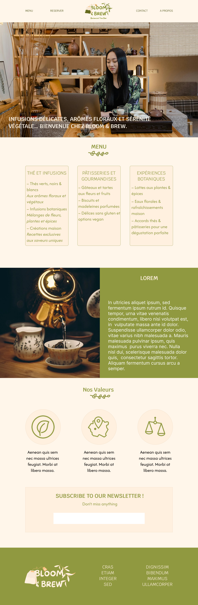

<!DOCTYPE html>
<html lang="fr">
<head>
    <meta charset="UTF-8">
    <meta name="viewport" content="width=device-width, initial-scale=1.0">
    <title>Maquettes Juliette Mouillac</title>
    <script async src="https://www.googletagmanager.com/gtag/js?id=G-RLG9SQFGNL"></script>
<script>
  window.dataLayer = window.dataLayer || [];
  function gtag(){dataLayer.push(arguments);}
  gtag('js', new Date());

  gtag('config', 'G-RLG9SQFGNL');
    <link rel="stylesheet" href="style.css">
    <link rel="icon" type="image/x-icon" href="logoinitiales.ico">
    <link rel="preconnect" href="https://fonts.googleapis.com">
<link rel="preconnect" href="https://fonts.gstatic.com" crossorigin>
<link href="https://fonts.googleapis.com/css2?family=Afacad:ital,wght@0,400..700;1,400..700&family=Inter:ital,opsz,wght@0,14..32,100..900;1,14..32,100..900&family=Modak&display=swap" rel="stylesheet">

</head>
<body>
    <header>
        <a href="index.html"></a>
        <nav>
            <ul>
                <li><a href="about.html">A propos</a></li>
                <li><a href="projets.html">Projets</a></li>
                <li><a href="contact.html">Contact</a></li>
            </ul>
        </nav>
    </header>
    <main>
        <h2 class="titre">Maquettes</h2>
        <div class="container">
            <div class="section">
                <div class="image-part">
                    
                </div>
                <div class="text-part">
                    <h3 class="sous-titre" id="lalawire">La La Langues</h3>
                    <p>Dans le cadre de mon <b>Master Web Editorial et Stratégie UX</b>, j’ai contribué à la création du site web de <b>La La Langues</b>, un organisme de formation en langues.
                    </p>
                    <p>Ce projet avait pour objectif de concevoir un site <b>ergonomique</b> et <b>attractif</b>, mettant en avant les services de l’organisme et facilitant l’accès aux informations essentielles pour les apprenants.
                    </p>
                    <p>J’ai occupé le rôle de <b>cheffe de projet</b>, et ai pu diriger une équipe de 5 étudiants, en plus de mon rôle principal de <b>designer web</b>. Le site est encore <b>en cours de production</b> et sera développé sur Wordpress, mais j’ai réalisé la maquette web sur Figma.
                    </p>
                    <a class="button" href="wireframe-lalalangues.pdf">Visiter</a>
                </div>
            </div>
            <div class="section inverted">
                <div class="image-part">
                    
                </div>
                <div class="text-part">
                    <h3 class="sous-titre" id="fizzpopwire">Fizzpop</h3>
                    <p>Fizzpop est une <b>marque fictive</b> que j’ai développé à la fois pour m’amuser mais également pour m’entraîner à l’utilisation de Figma et à la création d’un <a href="branding.html">univers graphique/branding</a>.</p>
                    <p>J’ai réalisé une maquette graphique sur <b>Figma</b>, et plusieurs contenus graphiques sur <b>Canva</b>.</p>
                    <a class="button" href="wireframe-fizzpop.pdf">Visiter</a>
                </div>
            </div>
            <div class="section">
                <div class="image-part">
                    
                </div>
                <div class="text-part">
                    <h3 class="sous-titre" id="bloomwire">Bloom & Brew</h3>
                    <p>J’ai réalisé cette maquette graphique pour accompagner une <a href="branding.html">charte graphique</a> <b>fictive</b>.</p>
                    <p>Comme Fizzpop, il s’agit d’un <b>projet d’entraînement</b> qui m’a permis de m’entraîner à la réalisation <a href="branding.html">d’univers graphique</a> et de maquettes fidèles à l’atmosphère recherchée.</p>
                    <a class="button" href="wireframe-bloom-brew.pdf">Visiter</a>
                </div>
            </div>
        </div>
        <a href="branding.html" class="voir-plus">Voir les brandings &#129170</a>
        </main>
    <footer>
        <ul class="footer-menu">
            <li><a href="https://www.linkedin.com/in/juliette-mouillac/"></a></li>
            <li><a href="about.html">A propos</a></li>
            <li><a href="projets.html">Projets</a></li>
            <li><a href="contact.html">Contact</a></li>
        </ul>
    </footer>
</body>
</html>
